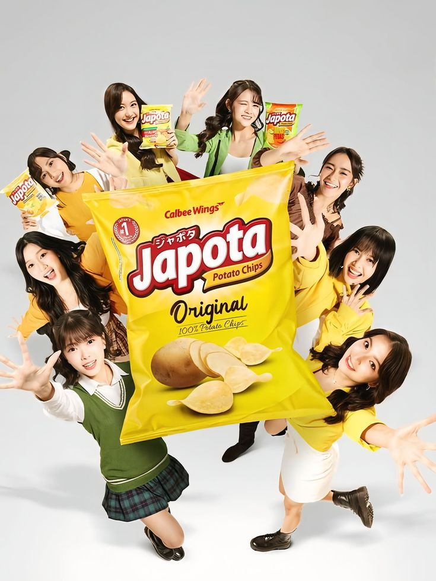
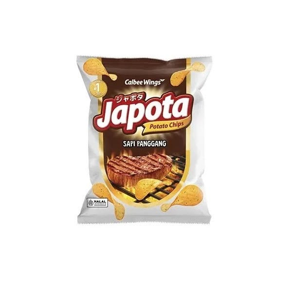

CRUNCHY • TASTY • HAPPY
Temukan Rasa,
Temukan Rasa,
Nikmati Kerenyahannya!
Jelajahi katalog Japota dengan enam pilihan varian rasa yang menarik. Temukan favoritmu dan nikmati sensasi keripik kentang!
Lihat Katalog ↓ SO
SOCRUNCHY!
OUR PRODUCTS
Varian Rasa Japota
Enam pilihan rasa untuk melengkapi waktu ngemilmu.



*Harga dan pilihan varian pada katalog ini merupakan contoh untuk proyek website. Sesuaikan dengan produk dan harga yang sebenarnya.
WATCH & ENJOY
Kenali Japota Lebih Dekat!
Japota asli Indonesia
ABOUT THE CATALOG
Tentang Katalog Japota
Website ini dibuat sebagai katalog digital untuk memperkenalkan pilihan varian keripik kentang Japota. Pengunjung dapat melihat gambar, nama, dan deskripsi produk melalui tampilan yang sederhana dan menarik.
Dengan perpaduan warna cream, merah, kuning, hijau, dan cokelat, katalog ini dirancang agar nyaman dilihat melalui laptop maupun HP.
Selain penjelasan katalog, ada juga penjelasan tentang berdirinya Japota produk UMKM lokal yaitu di Bandung sekitar tahun 2018 yang varian awalnya hanya varian keju dan BBQ dan dititipkan ke warung atau cafe di Bandung dan kini cemilan ini menjadi cemilan lokal yang cukup kekinian di kalangan remaja maupun anak-anak.
CONTACT
Terima Kasih Sudah Berkunjung!
Katalog ini dibuat untuk tugas proyek website HTML dan CSS .
Kembali ke Atas ↑